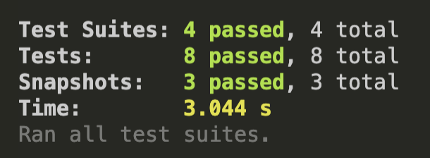
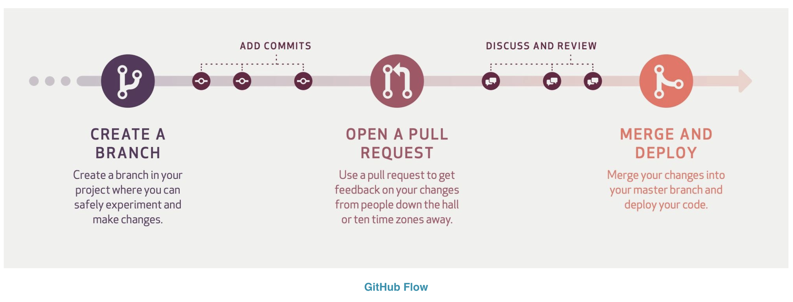
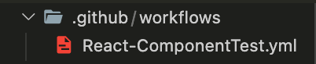
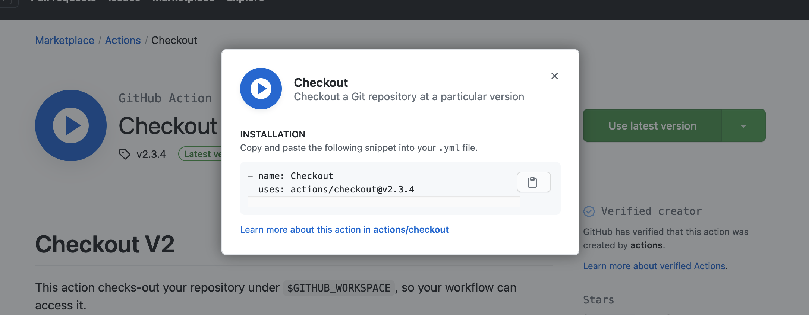
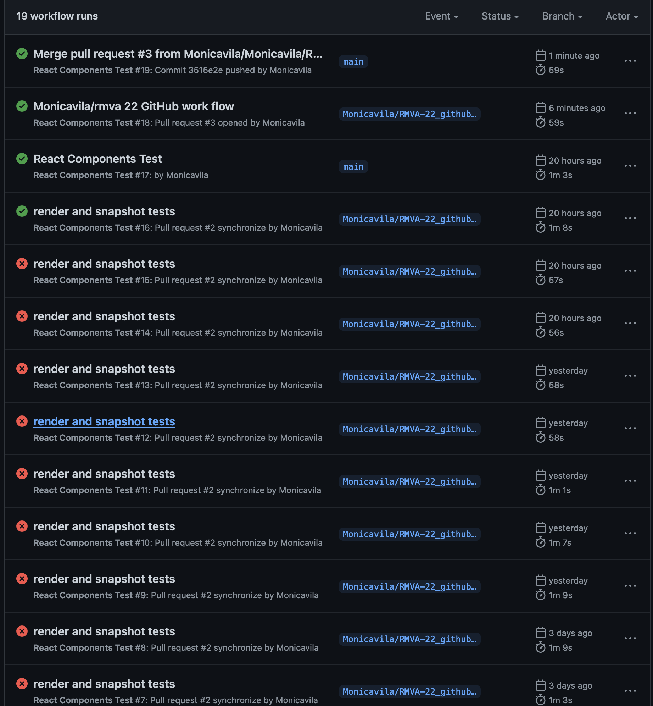
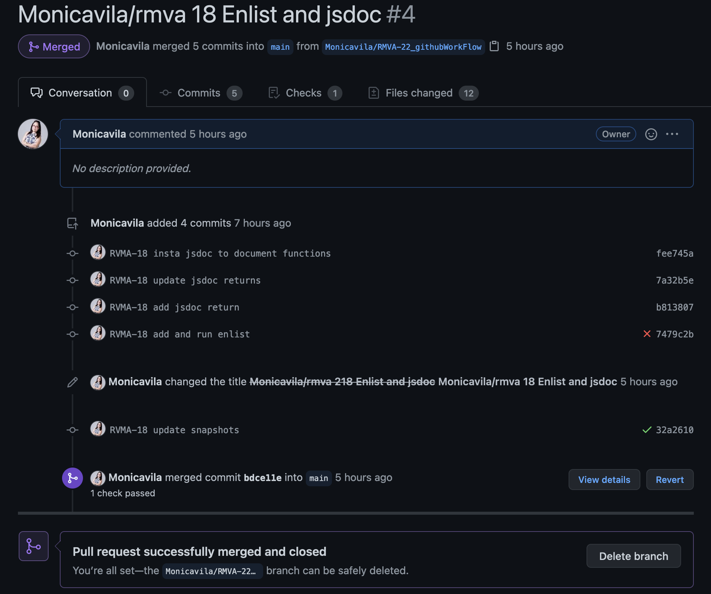

Workflow-Github¶
When you finally succeed with all your React tests, and your terminal is all in green (Enjoy your moment!):
{kind=link}
It’s time to talk about a strategy for merge and deploy to git. This tool helps to secure that the code that will be merged with the main branch is sanitized and clean, ready to pass successfully the pull request, this schema illustrates the method followed to implement workflow in our repositories.
Note
Once your pull request has been reviewed and the branch passes your tests, you can deploy your changes to verify them in production. If your branch causes issues, you can roll it back by deploying the existing main branch into production.
To add this workflow into your repository you’ll need to create a folder named .github and inside this folder other folder named workflows, inside this folder creat a file projecName.yml the result will look like this:
{kind=link}
The instructions we’ll delcare inside this file are:
name: React Components Test
# Triggers the workflow on push to main or pull request
on:
push:
branches:
- main
pull_request:
branches:
- main
jobs:
# Running unit tests workflow
#name of the job
components-test:
#ambient
runs-on: ubuntu-latest
strategy:
matrix:
#node -v
node-version: [ '14' ]
steps:
#https://github.com/marketplace/actions/checkout
- uses: actions/checkout@v2
- name: Use Node.js ${{ matrix.node-version }}
uses: actions/setup-node@v1
with:
node-version: ${{ matrix.node-version }}
- name: Install node dependencies
run: npm install
- name: Running Unit tests
run: npm test
First, we will indicate the name of the project. Second, with on we’ll establis that the branches will get merged with main after pass the pull request. Third, run the unit tests workflow. In this part, we set the name of the job and the characteristics of the ambient, like version of node.
Now got to https://github.com/marketplace/actions/checkout and click use latest version of checkOut, select the version you prefer or need, copy the code they display and paste in steps section:
Finally, we specify that we will use node to install dependencies with npm install and run all the tests with npm test. Remember to install your dependencias locally a not globally, workflow doesn’t install global ones. Next, create a new branch in your repository and push your project folder with your workflow file configuration. You will know this configuration is working because a warning to set a pull request to main is displayed in the repository.
The workflow will be to push updates to your new branch then if pass all tests start a new pull request to main.
Until all the tests pass and all the code errors are solved it’ll look like this:
We will deploy with succes and be able to set a pull request to merge our changes with the main branch:
Tip
Manage your commits with the same name of your epics in Jira, which helps to track what Epics are solved and why and on other hand which Epics are late and why.